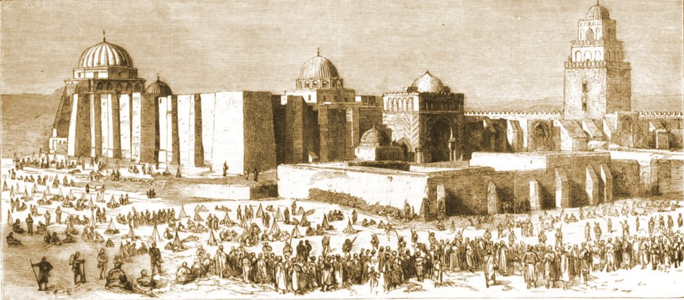

Krajobrazy Rilkego
Kairouan
Zwiedzając w grudniu roku 1910 Kairouan, „drugi, obok Mekki, wielki cel pielgrzymek mahometan”, Rilke odczuł „prostotę i żywość tej religii. Prorok jest wielki, a miasto należy do niego niczym imperium, niczym wizja… Wokół niego jedynie równina i groby, jak gdyby oblężone przez swych umarłych”.
Wielki Meczet (Mosquée Okba Ibn Nafi), Kairouan, Tunezja